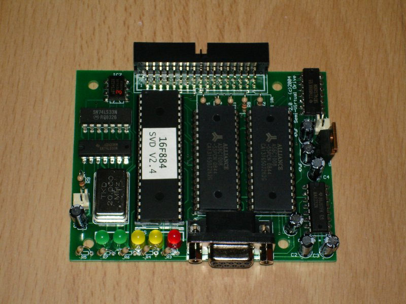
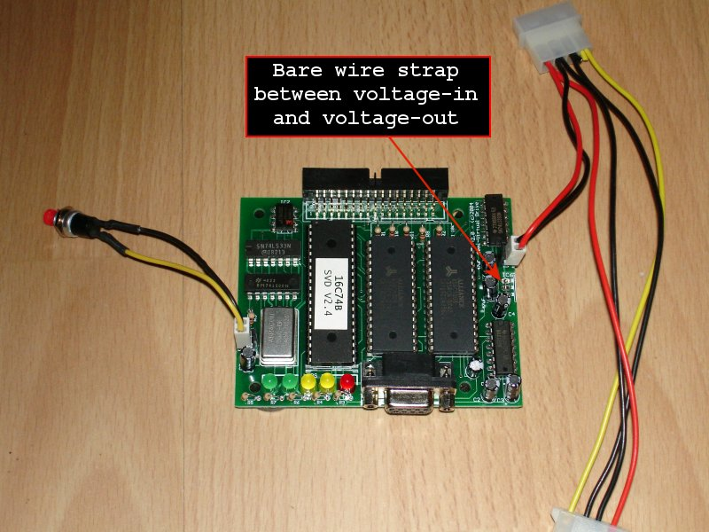
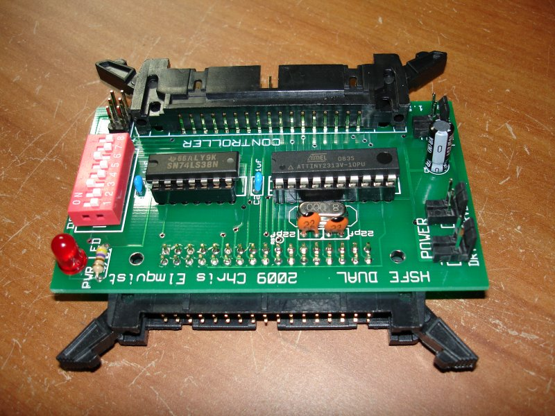

ALTERNATE DISK STORAGE
The Heathkit H-8 and H-89 computers use hard sector disks for storage. Hard sector disks can still be found but are fairly expensive. A couple alternate storage options that work with the Heathkit 8 bit computers are shown below.
SVD (Semi-Virtual Disk)
HSFE (Hard Sector Floppy Emulator)
FC-5025 by Device Side Data
SEMI-VIRTUAL DISK
The
SVD
was invented by Eric Rothfus. It is one of the most used devices with my Heathkit computers.
Basically the SVD is a gadget that allows you to upload
disk images
to the onboard RAM so that you can use these images with your computer. Disk images are simply copies of a disk stored in files on your modern day computer. The standard format for Heathkit disk images is the H8D format. You can create disk images on your PC computer by using 2 free utilities. See my
H8DUtility page
for details.
To use the SVD with your Heathkit computer you plug one end of the SVD into your disk controller and the other end into a COM port on your PC. You use the PC-side
SVD control panel
to upload images to the SVD and the Heathkit computer thinks it's talking to a floppy disk drive.
The following photo is a fully assembled SVD PCB.

I generally don't use a power adapter with my SVDs anymore. Instead, I modified the power input so that I can use a typical ATX style disk drive power plug as shown below:

The simple mod in the above photo allows me to put the SVD inside my H8-2000 case and power it with the MiniATX power supply.
I have builds of the SVD firmware to allow it to run on different PIC micro controllers. See the links below for the complete collection. To build the firmware from the source code use Microchip's
MPLAB IDE
V8.10 or later.
SVD Firmware Source Code
V2.3 for 16C74B PICs
V2.3 for 16F877 PICs
V2.3 for 16F884 PICs
V2.4 for 16C74B PICs
V2.4 for 16F877 PICs
V2.4 for 16F884 PICs
SVD Firmware HEX files ready to burn to a PIC chip
V2.3 for 16C74B PICs
V2.3 for 16F877 PICs
V2.3 for 16F884 PICs
V2.4 for 16C74B PICs
V2.4 for 16F877 PICs
V2.4 for 16F884 PICs
Heath CP/M bootable disk images
ZIP with 19 images 1MB
HARD SECTOR FLOPPY EMULATOR
The HSFE was invented by Chris Elmquist specifically for the Heathkit computers. It may also work with other vintage computers that used 10-sector disks too but to my knowledge this has not been tested. The HSFE is a device that "emulates" the hard sector index pulses so that you can use commonly available 3.5" soft sector media and 3.5" floppy drives. The hard sector controller card in your Heathkit computer thinks it is reading and writing to a hard sector disk.
Below is a photo of the HSFE

One end of the HSFE plugs into your hard sector controller card and the other end plugs into a pair of 3.5" floppy drives. You can then use the 3.5" low-density (720K) media with your Heathkit computer. It works with high-density (1.44MB) media too if you cover up the density hole with black tape. See below for a typical HSFE configuration.
Download the HSFE manual in PDF format
here
.
HSFE firmware and utilities:
HSFE.ZIP
FC5025 by Device Side Data
Original web link here:
FC5025
As of November 17, 2013 I have a working version of the software that will read disks using the FC5025 and write out image files. Currently Heathkit hard sector formats are not working yet but all other supported formats are functional. I added support for MS-DOS single side floppies.
Link below contains a zip of the contents of the included CDROM with developer docs and source code.
Driver Source and Application Software
(W32/MacOSX) v1309 (245MB zip)
My Mac OSX Xcode source code project for a
FC5025 Control Panel App
(1.4MB zip)
The compiled and ready to run
executable for Mac OSX
(1 MB zip)
A good starting point for any FC5025 project. It will read from the FC5025 and write out disk images. Currently the additional features I added are as follows:
Support for reading single sided MS-DOS disks (180K)
Support for reading Heathkit soft-sector disks (Single/Double sided, 40/80 track)
Support for reading Heathkit hard-sector disks (currently experimental and NOT working)
Support for reading a custom disk image by specifying some parameters in the control panel app (wip)
SEBHC.ORG
November 19, 2013
e-mail